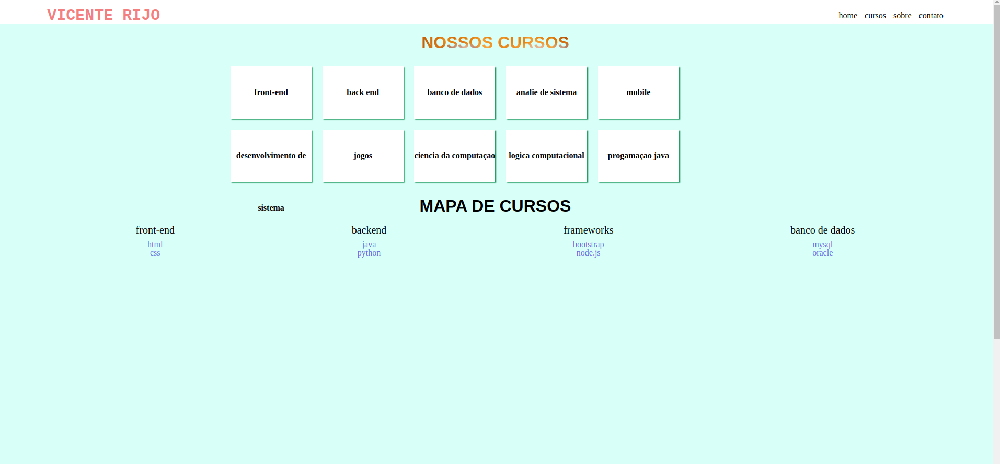
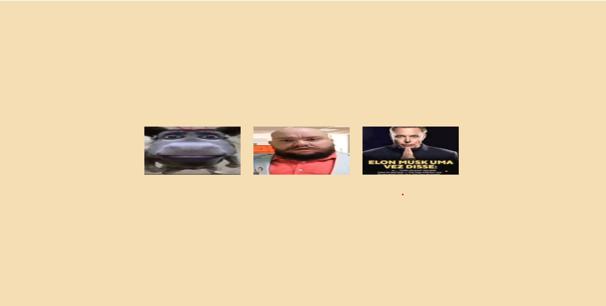
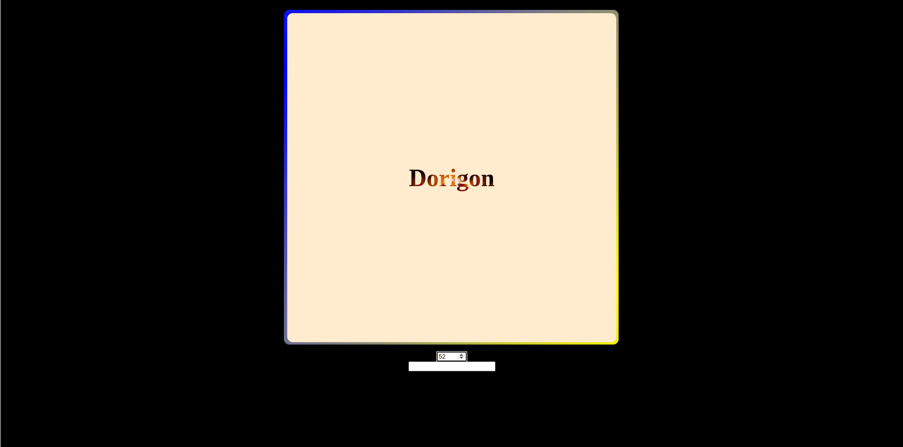

Meus projetos

Nossos Cursos
O projeto "Nosos Curos" é uma aplicação web interativa focada em informar o usuário sobre oa cursos diponiveis.

Minha Área de Estudo
O projeto "Área de Estudo" é uma aplicação interativa que permite ao usuário descobrir sua afinidade com diferentes áreas do conhecimento: Humanas, Exatas e Biológicas.

Flash Cards
O projeto "FlashCard" é uma aplicação interativa de estudo que utiliza cartões de perguntas e respostas para facilitar a revisão de conteúdos variados. Com um design moderno e responsivo, os cartões giram ao clique, revelando a resposta e tornando o aprendizado mais dinâmico e envolvente.